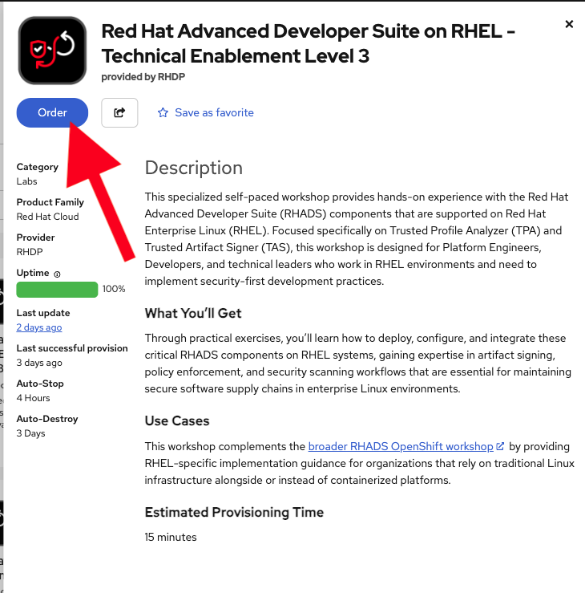
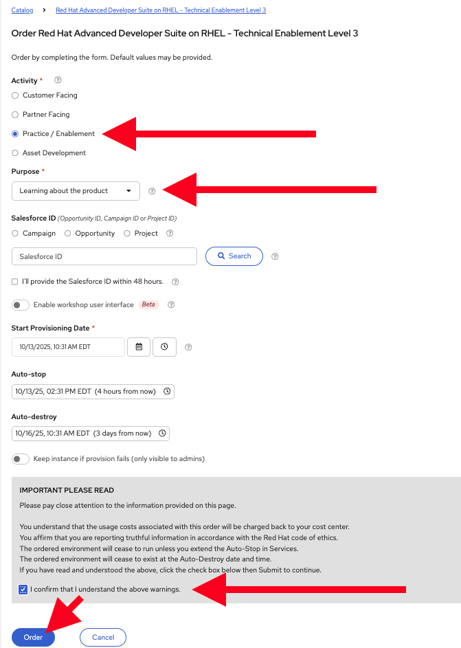
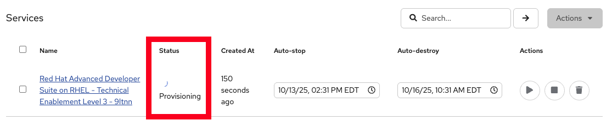
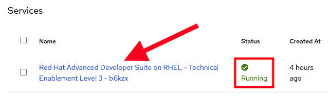
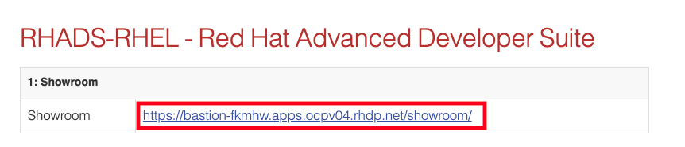
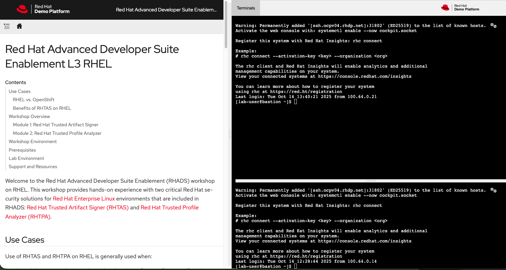

Setup Trusted Profile Analyzer on RHEL
|
IF you have already completed the TAS module on RHEL, you simply re-use that same RHEL workshop environment and follow the instructions inside of it for TPA. Otherwise, continue with the instructions below to provision a new RHEL workshop environment. |
Overview
To setup TPA on RHEL, you will use a separate hands-on workshop which provisions multiple RHEL systems for you to use (which takes ~15 minutes to provision). You will then use Red Hat Ansible Automation Platform to deploy RHTPA in a production-ready configuration using the supported Ansible collection.
Use Cases
RHTPA on RHEL is ideal for the following scenarios:
- Pure RHEL Environments
-
Organizations that want to ensure the integrity and authenticity of software artifacts in environments that don’t use OpenShift or container platforms.
- Non-OpenShift Kubernetes Platforms
-
Integrate RHADS security components into CI/CD pipelines running on non-OpenShift Kubernetes distributions (e.g., K3s, K3d, RKE2, EKS, AKS, GKE) where TAS is not supported. Configure these pipelines to use RHTAS and RHTPA services running on RHEL.
- Traditional Server Deployments
-
Organizations preferring traditional server deployments can run RHTPA on bare metal or virtual machines without container orchestration platforms.
- Legacy Infrastructure Modernization
-
Integrate RHTPA into existing data centers running RHEL without requiring full OpenShift migration, enabling gradual adoption of supply chain security practices.
- Resource-Constrained Environments
-
Deploy in environments where full OpenShift clusters are impractical due to resource, cost, or complexity constraints.
- Custom Infrastructure Requirements
-
Organizations with specific networking, database, identity provider, or security requirements that need granular control over RHTPA configuration.
Workshop Access
The hands-on workshop for installing and configuring RHTPA on RHEL is available through the Red Hat Demo Platform and takes about 15 minutes to provision. Follow the instructions below to provision the RHEL workshop environment.
Prerequisites
Before provisioning the workshop, ensure you have:
-
Access to the Red Hat Demo Platform
-
Valid Red Hat credentials for the Demo Platform:
-
Red Hat Associates: Use your Red Hat SSO credentials
-
Partners and Customers: Use your Red Hat account credentials
-
-
One of the following
registry.redhat.iocredentials (required during the workshop):-
A Red Hat account username/password, ora Red Hat Registry Service Account username/token
-
|
If you don’t have registry credentials, visit the Registry Authentication article on the Red Hat Customer Portal to create an account. You can also create or use an existing Registry Service Account. |
Provisioning Your Workshop
Follow these steps to provision your RHTPA on RHEL workshop environment:
-
Access and Order the Workshop
Navigate to the RHADS on RHEL - Technical Enablement Level 3 catalog item and click the Order button:
 -
Fill out the Form
Once you click the Order button, you’ll be presented with a provisioning form. Complete the following:
-
Activity: Practice / Enablement
-
Purpose: Learning about the product
-
Confirm the important note at the bottom of the form.
-
Click the Order button.
The workshop shouldn’t take more than an hour to complete once provisioned. If you need more than 4 hours, you can adjust the auto-stop and/or auto-destroy times on the form.
-
-
Wait for Provisioning to Complete
-
Provisioning typically takes 15-20 minutes
-
You’ll receive email notifications when provisioning starts and completes
-
Monitor the status in your Red Hat Demo Platform dashboard on the Services tab:

-
-
Access Workshop Instructions
Once provisioning is complete:
-
From the Services tab, click on the name of the service:
 -
Locate and click the Showroom link at the top (you won’t need to use the other links presented, unless you want to explore the workshop environment in more detail):
 -
Follow the step-by-step instructions provided in the workshop

-
When you finish this TPA on RHEL workshop, feel free to use the same workshop environment to complete the TAS workshop on RHEL (you don’t need to re-order the same catalog item again, just re-use the existing environment.)
Next Steps
After completing the TPA workshop, you’ll be ready to:
-
Analyze software profiles for security vulnerabilities
-
Ensure compliance with security policies
-
Integrate with trusted software supply chain workflows
-
Provide detailed reporting and analytics
-
Explore the Trusted Software Supply Chain with TPA module for advanced use cases on OpenShift